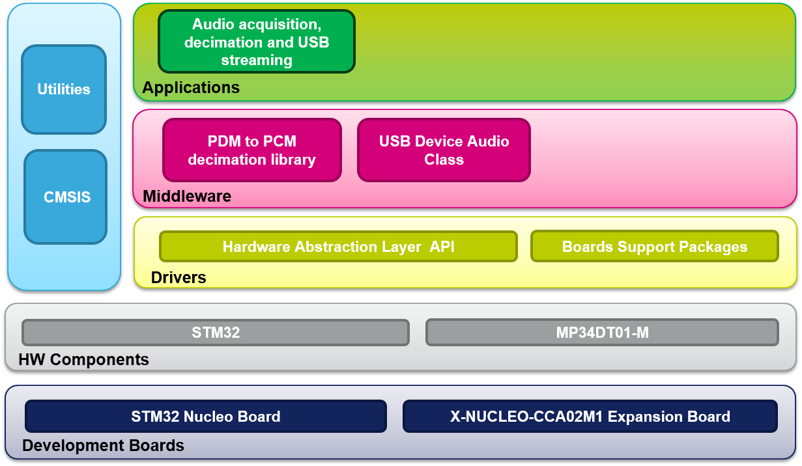

|
The X-CUBE-MEMSMIC1 software package is an expansion for STM32Cube.
This software provides drivers running on STM32 for the acquisition of
STM digital MEMS microphones (MP23DT01-M). It is built on top of
STM32Cube software technology that ease portability across different
STM32 microcontrollers.
X-CUBE-MEMSMIC1 software features:
-
Complete middleware to build applications using STM MEMS digital microphones.
-
Easy portability across different MCU families thanks to STM32Cube.
-
Sample applications that the developer can use to start experimenting with the code.
-
References to free application that can be used to record and save acquired microphones audio signals.
-
Free user-friendly license terms.
-
Examples
implementation available for X-NUCLEO-CCA02M1 STM32 expansion board
plugged on top of one NUCLEO-F401RE, NUCLEO-F072RB, NUCLEO-L053R8, NUCLEO-L476RG or NUCLEO-F746ZG
The figure below shows the overall architecture.

Related information and documentation:
Update
History
V1.3.1
/ 01-Sep-2016
Main Changes
- Modified #define directives to set the size of audio buffer
- New version of BSP drivers to grant compatibility with L4 HAL layer
Contents
- STM32Cube HAL and Middlewares drivers
- STM32F4xx drivers aligned to STM32CubeF4 V1.13.0
- STM32L0xx drivers aligned to STM32CubeL0 V1.7.0
- STM32F0xx drivers aligned to STM32CubeF0 V1.6.0
- STM32L4xx drivers aligned to STM32CubeL4 V1.5.1
- STM32F7xx drivers aligned to STM32CubeF7 V1.4.1
Development
Toolchains and Compilers
- IAR Embedded
Workbench for ARM (EWARM) toolchain V7.70 + ST-Link
- RealView Microcontroller Development Kit (MDK-ARM) toolchain V5.20 + ST-Link
- System Workbench for STM32 (SW4STM32) v 1.9.0 + ST-Link
Supported
Devices and EVAL boards
- STM32F401RE, STM32L053R8, STM32F072, STM32L476
and STM32F746 devices
- X-NUCLEO-CCA02M1
Known
Limitations
- Number of acquired channels and sampling frequency has some limitations on the STM32F0 and STM32L0 devices
- stm32f0xx_hal_pcd.h
file of the HAL drivers for STM32F0 have been modified in
order to bypass a limitation compromising USB streaming.
V1.3.0
/ 13- June-2016
Main Changes
- General update on STM32Cube drivers
- GenAdded support for NUCLEO-F746ZG
- PDM to PCM library aligned with latest release
- New version of BSP drivers
Contents
- STM32Cube HAL and Middlewares drivers
- STM32F4xx drivers aligned to STM32CubeF4 V1.12.0
- STM32L0xx drivers aligned to STM32CubeL0 V1.5.0
- STM32F0xx drivers aligned to STM32CubeF0 V1.5.0
- STM32L4xx drivers aligned to STM32CubeL4 V1.3.0
- STM32F7xx drivers aligned to STM32CubeF7 V1.3.0
Development
Toolchains and Compilers
- IAR Embedded
Workbench for ARM (EWARM) toolchain V7.60 + ST-Link
- RealView Microcontroller Development Kit (MDK-ARM) toolchain V5.17 + ST-Link
- System Workbench for STM32 (SW4STM32) v 1.9.0 + ST-Link
Supported
Devices and EVAL boards
- STM32F401RE, STM32L053R8, STM32F072, STM32L476
and STM32F746 devices
- X-NUCLEO-CCA02M1
Known
Limitations
- Number of acquired channels and sampling frequency has some limitations on the STM32F0 and STM32L0 devices
- stm32f0xx_hal_pcd.h
file of the HAL drivers for STM32F0 have been modified in
order to bypass a limitation compromising USB streaming.
V1.2.0
/ 11- January -2016
Main Changes
- Added support for STM32L4 with DFSDM peripheral
- General update on STM32Cube package
- Minor changes in BSP layer
Contents
- STM32Cube HAL and Middlewares drivers
- STM32F4xx drivers aligned to STM32CubeF4 V1.8.0
- STM32L0xx drivers aligned to STM32CubeL0 V1.3.0
- STM32F0xx drivers aligned to STM32CubeF0 V1.4.0
- STM32L4xx drivers aligned to STM32CubeL4 V1.1.0
Development
Toolchains and Compilers
- IAR Embedded
Workbench for ARM (EWARM) toolchain V7.50 + ST-Link
- RealView Microcontroller Development Kit (MDK-ARM) toolchain V5.17 + ST-Link
- System Workbench for STM32 (SW4STM32) v 1.6.0 + ST-Link
Supported
Devices and EVAL boards
- STM32F401RE, STM32L053R8, STM32F072 and STM32L476
devices
- X-NUCLEO-CCA02M1
Known
Limitations
- Number of acquired channels and sampling frequency has some limitations on the STM32F0 and STM32L0 devices
- stm32f0xx_hal_pcd.h
file of the HAL drivers for STM32F0 have been modified in
order to bypass a limitation compromising USB streaming.
V1.1.0
/ 4-June-2015
Main Changes
- Added support for latest version of System Workbench for STM32 (SW4STM32) (v1.2.0)
- STM32F4 FPU support enabled
- Removed compiling options in USB files not compatible with new version of the IDE
- STM32F4 HAL drivers updated to version 1.3.1
- Minor changes in BSP layer (BSP_AUDIO_IN_Record() function) and clock pin initial state (PULLUP)
Contents
Development
Toolchains and Compilers
- IAR Embedded
Workbench for ARM (EWARM) toolchain V7.30 + ST-Link
- RealView Microcontroller Development Kit (MDK-ARM) toolchain V5.10 + ST-Link
- System Workbench for STM32 (SW4STM32) v 1.2.0 + ST-Link
Supported
Devices and EVAL boards
- STM32F401RE, STM32L053R8 and STM32F072
devices
- X-NUCLEO-CCA02M1
Known
Limitations
- Number of acquired channels and sampling frequency has some limitations on the STM32F0 and STM32L0 devices
- When compiling using SW4STM32 and STM32L0 device, dynamic memory allocation is not used for USB Audio Input driver
- stm32f0xx_hal_pcd.c and stm32l0xx_hal_pcd.c and stm32f0xx_hal_i2s.c
files of the HAL drivers for STM32L0 and STM32F0 have been modified in
order to bypass a limitation compromising USB streaming and I2S dma
stop.
V1.0.0
/ 29-April-2015Main Changes
- First official release of firmware for X-NUCLEO-MEMSMIC1 Expansion Board.
Contents
Development
Toolchains and Compilers
- IAR Embedded
Workbench for ARM (EWARM) toolchain V7.30 + ST-Link
- RealView Microcontroller Development Kit (MDK-ARM) toolchain V5.10 + ST-LINK
- System Workbench for STM32 (SW4STM32) + ST - LINK
Supported
Devices and EVAL boards
- STM32F401RE, STM32L053R8 and STM32F072
devices
- X-NUCLEO-CCA02M1
Known
Limitations
- Number of acquired channels and sampling frequency has some limitations on the STM32F0 and STM32L0 devices
- When compiling using SW4STM32 and STM32L0 device, dynamic memory allocation is not used for USB Audio Input driver
- stm32f0xx_hal_pcd.c and stm32l0xx_hal_pcd.c and stm32f0xx_hal_i2s.c
files of the HAL drivers for STM32L0 and STM32F0 have been modified in
order to bypass a limitation compromising USB streaming and I2S dma
stop.
License
Licensed
under MCD-ST Liberty SW License Agreement V2, (the "License"); You may
not use this package
except in compliance with the License. You may obtain a copy of the
License at:
Unless
required by applicable law or agreed to in writing, software
distributed under the License is distributed on an "AS IS" BASIS,
WITHOUT
WARRANTIES OR CONDITIONS OF ANY KIND, either express or implied. See
the License for the specific language governing permissions and
limitations under the License.
For
complete documentation on STM32 Microcontrollers visit www.st.com/STM32
|